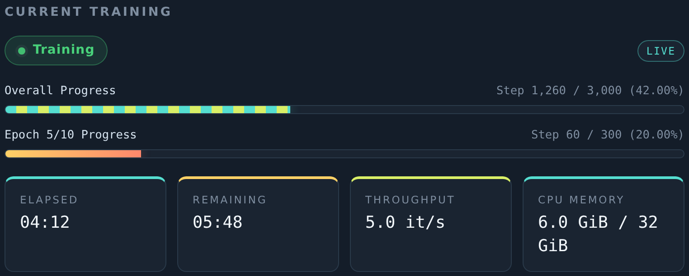
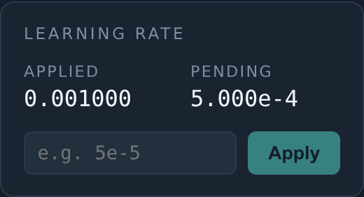
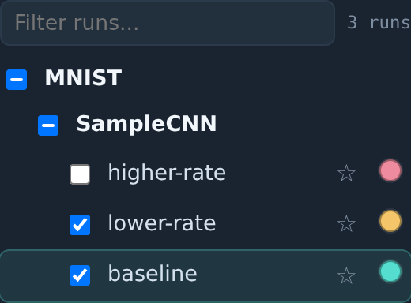
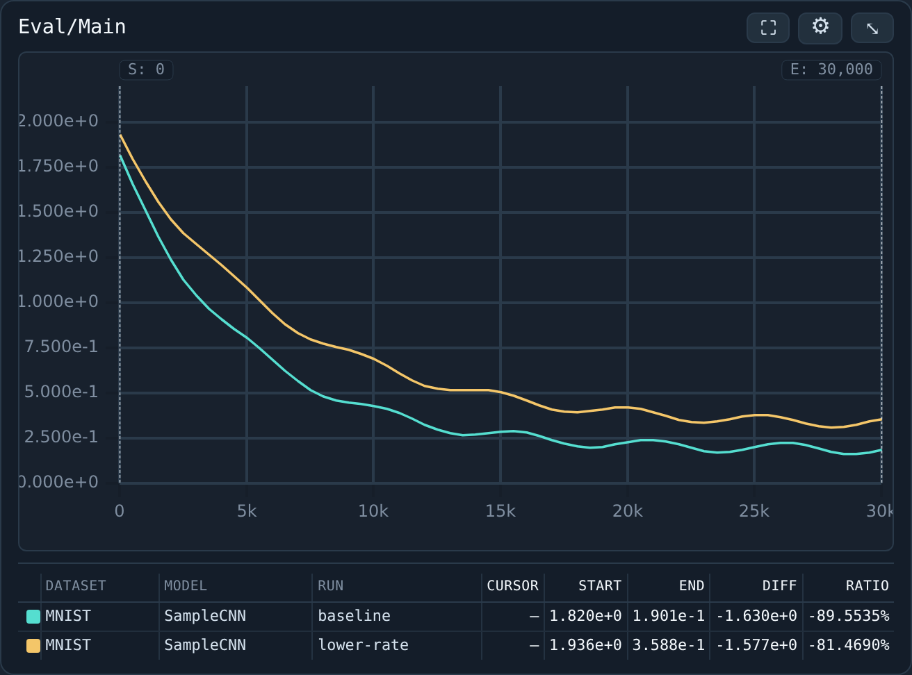
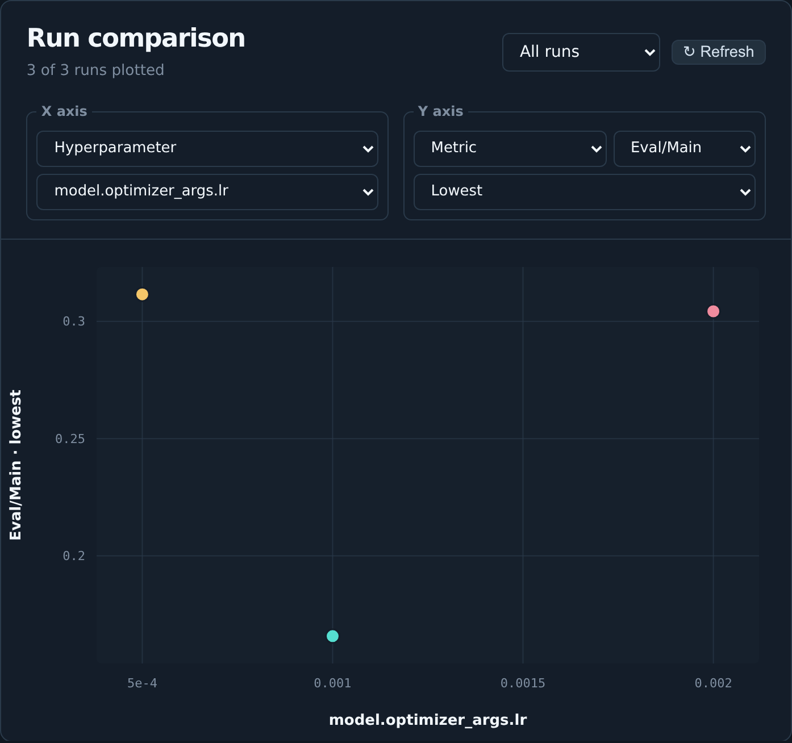
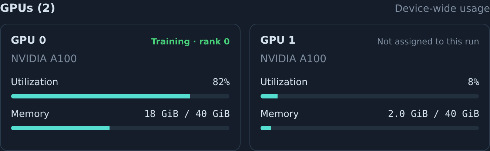

Local logger
ExperimentLogger synchronously records run metadata, scalar samples, and PNG figures in the run's SQLite file.
Core workflow / observability
A standalone local service combines one live training feed with durable run history. It is an observer and operator interface, not the owner of the training loop.
Install aiohttp in the environment that hosts the dashboard, then start the service.
python -m pip install aiohttp
python -m Training.ExperimentManagerThe default host is 127.0.0.1, the starting port is 9000, and the default run root is ./Runs relative to the command's working directory.
python -m Training.ExperimentManager \
--runs-root /path/to/project/Runs \
--host 127.0.0.1 \
--port 9000experiment.constants["experiment_manager_server_port"] to that port.ExperimentLogger synchronously records run metadata, scalar samples, and PNG figures in the run's SQLite file.
ExperimentManagerClient sends current progress on a daemon thread and polls for a requested learning rate.
The aiohttp server exposes REST and WebSocket endpoints, scans run history, and serves the bundled React dashboard.
HTTP failures are swallowed by the client, so a missing monitor does not block or crash training. The current service keeps only the most recently registered run in its live-state panel; historical data comes from run databases.
The dashboard screenshots use example runs and simulated telemetry. Select any image to see it at full size.


Enter a positive finite value and choose Apply. The client polls for the request and updates the optimizer’s first parameter group just before the next training batch.
Watch Applied for confirmation. The scheduler may change the rate again on its usual epoch cadence.

Expand a dataset and model, then check the runs you want to plot. The dot beside each name sets its curve color. Use the star to mark a run or the filter to find it again.
Click a run’s name to inspect its comments, hyperparameters, status, timestamps, and run directory. Choose Architecture in the summary to explore its module diagram when a model description is available.

Use the gear to adjust curve settings or the diagonal arrow to expand the chart. The Figures section below the curves displays matplotlib figures saved by the checked runs.
The service also watches the run directory and broadcasts tree changes to connected browsers. Older folders without a SQLite record are scanned as legacy runs with a reduced metadata surface.
Open Compare models on the dashboard. Each dot represents one training directory and uses its tree color. The plot starts with all runs. Choose Checked runs to use the tree checkboxes.
Choose a source and field independently for each axis. For example, set X to Hyperparameter → model.optimizer_args.lr and Y to Metric → Eval/Main → Lowest to compare configured learning rates against the lowest saved evaluation loss.

| Field | How the dashboard obtains it |
|---|---|
| Parameters | Total parameter elements, including frozen parameters. The standard experiment records this once during setup, on rank zero for distributed runs. Older runs and lazy models can supply an offline profile. |
| Training throughput (it/s) | New completed runs use the final logged training step divided by elapsed time from logger setup to close. This includes evaluation and checkpointing. Older and active runs use the change in step divided by elapsed time between two distinct retained LR samples. |
| Model file size (MiB) | On-disk size of last.pth in the run folder, falling back to best.pth. Completed profiles also record the size when checkpoints and logs use separate directories. One MiB equals 1,048,576 bytes. |
| Forward MACs and FLOPs | With calflops installed, the standard experiments profile the model after successful training on a single evaluation example. Compare runs with matching input shapes. Counts cover the operators that calflops recognizes. |
| Metric | Any recorded scalar tag, including custom training and evaluation metrics. Last uses the greatest recorded step and the latest insertion at that step. Lowest and Highest use all finite samples retained in SQLite. Storage sampling can discard earlier extrema. |
| Hyperparameter | Numeric settings from saved run configuration, including nested paths. Configured optimizer learning rate and the LR scalar history can be selected independently. |
Hover over the plot to read both coordinates. Hover over a dot to see its training directory. Click it to highlight the run and open its summary. Click again to cycle through runs at identical coordinates. Click empty space to clear the highlight while keeping the run summary open. Runs missing either value are excluded from the plot and counted above it. Use Refresh after training advances or after adding a profile. Select ← Dashboard to return.
The standard experiments rebuild an eager CPU model using the trained weights. They run it in evaluation mode on one example with gradients disabled. Distributed training profiles only on global rank zero. The run database stores the counts, input tensor shapes, and batch size under model_profile.
For a model with one batched tensor named input or data, the default adapter supplies the forward argument. Override getProfileInputs for different keys, preprocessing, multiple arguments, or keyword arguments. The evaluation dataset receives a batch size of one. For example:
def getProfileInputs(self, batch):
return (batch["tokens"],), {"mask": batch["attention_mask"]}If the example or model cannot run on CPU, the profiler records the reason and the training result remains available. Set experiment.profile_after_training = False to skip the extra model allocation and forward pass. For older runs, or models that require another device or profiler, supply a profile file.
In a separate Python process, construct the model with the configuration used for that run. Profile a representative forward pass and save the raw counts in model_profile.json beside the run database or checkpoint. This example uses one MNIST input and the bundled SampleCNN. Adapt the model, input, and directory for your experiment.
from pathlib import Path
import json
import torch
from calflops import calculate_flops
from Models import SampleCNN
run_dir = Path("Runs/MNISTSampleDataset/SampleCNN/YOUR_RUN")
model = SampleCNN().eval()
with torch.no_grad():
flops, macs, _ = calculate_flops(
model, args=[torch.zeros(1, 1, 28, 28)], output_as_string=False,
print_results=False, print_detailed=False,
)
profile = {
"parameters": sum(p.numel() for p in model.parameters()),
"forward_macs": macs,
"forward_flops": flops,
}
(run_dir / "model_profile.json").write_text(json.dumps(profile), encoding="utf-8")Counts reflect the operators supported by the chosen profiler and the path taken by that input. You can also supply numeric counts from your own profiler using the same JSON keys. Each field is optional.
| File | Scope | Contents |
|---|---|---|
Runs/.../<run>/status_and_log.sqlite | One experiment | Metadata, status, sampled scalar series, and PNG figure blobs. |
Runs/Experiment_GUI_Status.sqlite | Dashboard | Theme and cross-run UI settings such as selections, curve configuration, collapsed panels, and notes. |
model_arch.txt | One experiment | Readable model representation and legacy fallback for the architecture view. |
comments.txt | One experiment | Readable comments and legacy fallback alongside SQLite metadata. |
Scalar storage uses capped sampling with a recent-value tail, and figure storage is capped per tag. This bounds database growth while retaining both long-run shape and recent detail.
The default loopback binding is appropriate for local use and SSH forwarding. Keep the service on loopback and forward its actual port:
ssh -L 9000:127.0.0.1:9000 user@training-hostThen open http://127.0.0.1:9000 locally. If you deliberately bind to a non-loopback address, protect access at the network layer because the interface includes mutation endpoints such as learning-rate control and run management.

The live panel shows every GPU detected by NVIDIA NVML, including GPUs not assigned to this run. Each card shows the physical device index and name, assigned training ranks, utilization, and used/total memory. GPU identities are matched by UUID, so CUDA visibility/reordering does not change the displayed physical identity. An unresolved identity is labeled “Assignment unknown”.
Install nvidia-ml-py for telemetry. Readings represent whole-device usage, including other processes. Missing individual readings appear as “—”; unavailable telemetry and no detected devices have distinct messages. Reporting is best-effort: the legacy client samples its own machine, while distributed runs use one reporter per machine (local rank 0), without training collectives. A disconnected snapshot retains the existing connection warning.
The live HTTP/WebSocket payload includes system.gpus: an array of id, index, name, utilization (percent), memory_used/memory_total (bytes), and training_ranks. A null list means telemetry unavailable; an empty list means no detected GPUs. Null assignments mean unresolved identity; empty assignments mean not assigned. Legacy first-device scalar fields remain available, and the UI supports old clients. GPU histories are not persisted.
Distributed snapshots additionally include nodes, with node_id, hostname, ranks, system, received_at, and connected. Cards are grouped by machine. Missing reports become stale after max(10 seconds, 3 × reporting interval); stale telemetry is not proof of a training failure. Only global rank 0 controls overall progress/status. system retains primary-machine readings for older clients. Node reports use /api/ingest/node and a unique run ID, so old runs cannot overwrite new snapshots. Run the server on the primary machine and set constants["progress_host"] to its reachable address on every worker. See the distributed guide.